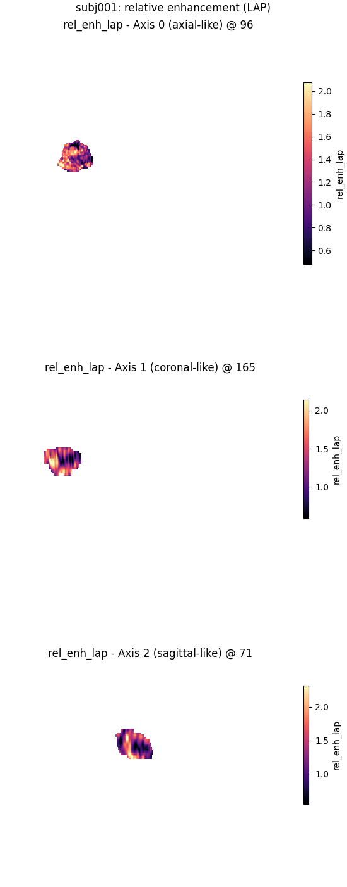
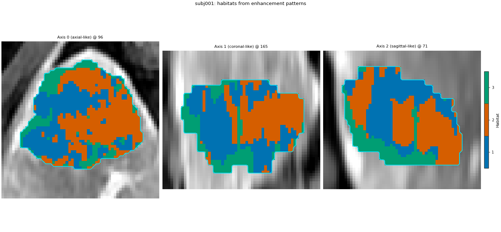

Note
Go to the end to download the full example code.
Enhancement patterns#
Background. Dynamic contrast-enhanced (DCE) MRI records how a tumour takes up and washes out contrast across several phases. Raw intensities mix absolute brightness with that kinetic pattern. Derived maps (ratios, differences, averages, kinetic slopes, or free expressions) put the pattern into the feature table that habitats use.
Purpose. You will build every enhancement-related calculator HABIT ships for this demo (ratio, difference, average, expression, kinetic), inspect their columns, and fit a small per-subject habitat map on the expression-based relative-enhancement set.
When to use. When habitats should follow contrast uptake / wash-out rather than absolute signal level.
Key terms.
ratio / difference / average – combiners that turn intensity blocks into derived blocks.
expression – named formulas over phase images (AST-safe).
kinetic – wash-in / wash-out slopes from four ordered phases (needs per-subject acquisition times).
Load one subject with four DCE phases#
Change DATA / MODALITIES / ROI to your preprocessed layout. sphinx_gallery_thumbnail_number = 1
from pathlib import Path
import matplotlib.pyplot as plt
from habit.contracts import Cohort, cohort_from_directory
from habit.datasets import fetch_demo
from habit.habitat_model import KMeansHabitatModelFitter
from habit.pipeline import voxel_units
from habit.spec import Spec
from habit.viz import plot_habitat_overlay, plot_voxel_texture_slice
from habit.voxel_features import (
ExpressionVoxelFeatures,
KineticVoxelFeatures,
build_voxel_extractor,
)
DATA = fetch_demo()
MODALITIES = ("pre_contrast", "LAP", "PVP", "delay_3min")
ROI = "LAP"
subject = cohort_from_directory(DATA, modalities=MODALITIES, roi=ROI)[0]
print(subject.subject_id, sorted(subject.images))
Path("out").mkdir(exist_ok=True)
HABIT demo data (cached)
DATA (preprocessed root): C:\Users\dongm\.habit_data\demo-data-v1\preprocessed
On-disk inventory of this folder:
subjects (5): subj001, subj002, subj003, subj004, subj005
image series: LAP, PVP, delay_3min, pre_contrast
mask keys: LAP, PVP, delay_3min, pre_contrast
example image: images/subj001/delay_3min/WATER__BH_Ax_LAVA_Flex_3min_Series0012.nrrd
example mask: masks/subj001/delay_3min/WATER__BH_Ax_LAVA_Flex_10min_Series0017_mask.nrrd
Your own data must use the same folder tree (change IDs / series names):
DATA/
images/<subject_id>/<modality>/<one image file>
masks/<subject_id>/<roi>/<one mask file>
Then load it with the same call the demos use:
cohort = cohort_from_directory(DATA, modalities=("LAP",), roi="LAP")
Swap DATA / modalities / roi to match your tree. Mask key is often the
same as one image series (here LAP).
subj001 ['LAP', 'PVP', 'delay_3min', 'pre_contrast']
Ratio, difference, and average combiners#
Each tree is a Spec: combiners list child extractors under
children. ratio / difference need two children; average
takes one or more.
ratio_field = build_voxel_extractor(
Spec(
"ratio",
{
"children": [
{"name": "raw", "params": {"modalities": ["LAP"], "roi": ROI}},
{
"name": "raw",
"params": {"modalities": ["pre_contrast"], "roi": ROI},
},
]
},
)
)(subject)
diff_field = build_voxel_extractor(
Spec(
"difference",
{
"children": [
{"name": "raw", "params": {"modalities": ["LAP"], "roi": ROI}},
{
"name": "raw",
"params": {"modalities": ["pre_contrast"], "roi": ROI},
},
]
},
)
)(subject)
avg_field = build_voxel_extractor(
Spec(
"average",
{
"children": [
{"name": "raw", "params": {"modalities": ["LAP"], "roi": ROI}},
{"name": "raw", "params": {"modalities": ["PVP"], "roi": ROI}},
]
},
)
)(subject)
print("ratio columns:", list(ratio_field.feature_names))
print("difference columns:", list(diff_field.feature_names))
print("average columns:", list(avg_field.feature_names))
ratio columns: ['ratio-LAP-pre_contrast']
difference columns: ['diff-LAP-pre_contrast']
average columns: ['average-raw-raw']
Expression maps (relative enhancement and wash-out)#
eps avoids division by zero. Each key becomes one column.
expression = ExpressionVoxelFeatures(
features={
"rel_enh_lap": "(LAP - pre_contrast) / (pre_contrast + eps)",
"rel_enh_pvp": "(PVP - pre_contrast) / (pre_contrast + eps)",
"rel_enh_delay": "(delay_3min - pre_contrast) / (pre_contrast + eps)",
"washout": "(LAP - delay_3min) / (LAP + eps)",
},
roi=ROI,
)
expr_field = expression(subject)
print("expression columns:", list(expr_field.feature_names))
print(expr_field.feature_frame().head())
expression columns: ['rel_enh_lap', 'rel_enh_pvp', 'rel_enh_delay', 'washout']
rel_enh_lap rel_enh_pvp rel_enh_delay washout
0 1.388759 1.412178 1.330211 0.024510
1 1.324201 1.438356 1.269406 0.023576
2 1.453303 1.478360 1.243736 0.085422
3 1.353070 1.350877 1.234649 0.050326
4 1.188559 1.398305 1.175847 0.005808
Kinetic slopes (four phases + acquisition times)#
Wash-in / wash-out need true inter-phase intervals. The demo pack has no timestamp table, so this page supplies a small synthetic table (same shape a real study would load from file). Pre-contrast lead time is handled inside the extractor.
PHASE_TIMES = {
subject.subject_id: {
"LAP": "10-00-30",
"PVP": "10-01-00",
"delay_3min": "10-03-00",
}
}
kinetic = KineticVoxelFeatures(
timestamps=PHASE_TIMES,
phases=list(MODALITIES),
roi=ROI,
)
kin_field = kinetic(subject)
print("kinetic columns:", list(kin_field.feature_names))
print(kin_field.feature_frame().head())
kinetic columns: ['wash_in_slope', 'wash_out_slope_lap_pvp', 'wash_out_slope_pvp_dp']
wash_in_slope wash_out_slope_lap_pvp wash_out_slope_pvp_dp
0 23.719999 0.333333 -0.291667
1 23.199999 1.666667 -0.616667
2 25.519999 0.366667 -0.858333
3 24.679999 -0.033333 -0.441667
4 22.439999 3.300000 -0.875000
Habitats from the expression maps#
One-subject fit: habitat ids are local to this patient.
units = voxel_units(expr_field)
fitter = KMeansHabitatModelFitter(n_habitats=3, n_init=3)
fitter.set_random_state(0)
model = fitter.fit([units], cohort=Cohort([subject], name="one"))
habitat_map = model.assigner()(units)
print(model.summary())
fig = plot_voxel_texture_slice(
expr_field,
feature="rel_enh_lap",
title=f"{subject.subject_id}: relative enhancement (LAP)",
)
fig.savefig("out/enhancement_rel_enh_lap.png", dpi=150, bbox_inches="tight")
plt.show()
fig = plot_habitat_overlay(
subject.image("LAP"),
habitat_map,
title=f"{subject.subject_id}: habitats from enhancement patterns",
crop_to="labels",
)
fig.savefig("out/enhancement_habitats.png", dpi=150, bbox_inches="tight")
plt.show()


HabitatModel kmeans-550300eb7e79e3f6
habitats : 3
features (4) : rel_enh_lap, rel_enh_pvp, rel_enh_delay, washout
defining cohort : n=1, name=one
modalities : pre_contrast, LAP, PVP, delay_3min
cohort digest : bbf1d587b6155a53...
produced by : habitat_model_fitter.kmeans
habit version : 3.0.0
random seed : 0
preprocessing state: inertia, validation
F:\work\habit_project\habit\viz\habitat_overlay.py:806: UserWarning: Display geometry conflict: image/anatomy direction does not match mask/label direction. Using the mask/label direction so coronal/sagittal superior-up follows the labelled anatomy. Pass direction= to override.
resolved_direction, resolved_spacing = resolve_display_geometry(
How to read the result#
Ratio, difference, average, expression, and kinetic all produced columns on this subject. The three habitats below are defined only inside this patient; do not compare their ids to another subject’s map.
Next#
Combine intensity and texture: Voxel features.
Full two-step design: Two-step habitats.
Total running time of the script: (0 minutes 8.980 seconds)